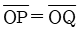
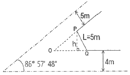
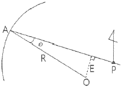
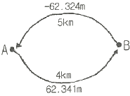
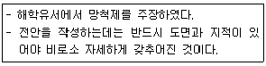

지적기사 (2012-03-04 기출문제)
1과목: 지적측량
1. 오차의 성질에 관한 설명으로 옳지 않은 것은?
- 정오차는 측정횟수를 거듭할수록 누적된다.
- 우연오차에게 같은 크기의 정(+)ㆍ부(-)오차가 발생할 확률은 거의 같다고 가정한다.
- 정오차는 발생 원인과 특성을 파악하면 제거할 수 있다.
- 부정오차는 착오라고도 하며, 관측자의 부주의 또는 관측 잘못으로 발생하는 것이 대부분이다.
(정답률: 알수없음)
2. 경위의측량방법에 따른 세부측량의 방법 기준으로만 나열된 것은?
- 지거법, 도선법
- 도선법, 방사법
- 방사법, 교회법
- 교회법, 지거법
(정답률: 64%)

3. 경위의측량방법과 다각망도선법에 의한 지적삼각보조점의 관측시 도선별 평균방위각과 관측방위각의 폐색오차는 얼마 이내로 하여야 하는가? (단, 폐색변을 포함한 변의 수는 4이다.)
- ±10초 이내
- ±20초 이내
- ±30초 이내
- ±40초 이내
(정답률: 알수없음)
4. h의 거리는? (단,

이다.)
- 3.960m
- 3.628m
- 2.649m
- 2.176m
(정답률: 46%)
5. 지적삼각점의 제도방법으로 옳은 것은?
- 직경 1mm, 2mm, 3mm의 3중원으로 제도한다.
- 직경 1mm, 2mm의 2중원으로 제도한다.
- 직경 2mm, 3mm의 2중원으로 제도한다.
- 직경 3mm의 원안에 십자선 표시를 제도한다.
(정답률: 70%)
6. 평판측량방법에 의한 세부측량의 기준 및 방법에 대한 설명이 옳지 않은 것은?
- 지적도를 갖춰 주는 지역에서의 거리측정단위는 5cm로 한다.
- 임야도를 갖춰 주는 지역에서의 거리측정단위는 50cm로 한다.
- 측량결과도는 축척 500분의 1로 작성한다.
- 기지점이 부족한 경우에는 측량상 필요한 위치에 보조점을 설치하여 활용한다.
(정답률: 64%)
7. 표준장 100m에 대하여 테이프(Tape)의 길이가 100m인 강제권척을 검사한 바 +0.⑤2m이었을 때, 이 테이프(Tape)의 보정계수는 얼마인가?
- 0.00⑤2
- 0.99948
- 1.00⑤2
- 1.99948
(정답률: 77%)
8. 지적삼각점측량에서 수평각의 측각공차 기준이 옳은 것은?
- 1측회의 폐색 : ±30초 이내
- 1방향각 : 40초 이내
- 삼각형 내각관측의 합과 180° 와의 차 : ±40초 이내
- 기지각과의 차 : ±30초이내
(정답률: 알수없음)
9. 경계점좌표등록부를 갖춰 두는 지역의 측량방법 및 기준이 옳지 않은 것은?
- 각 필지의 경계점을 측정할 때에는 도선법ㆍ방사법 또는 교회법에 따라 좌표를 산출하여야 한다.
- 필지의 경계점이 지형ㆍ지물에 가로막혀 경위의를 사용할 수 없는 경우에는 간접적인 방법으로 경계점의 좌표를 산출할 수 있다.
- 기존의 경계점좌표등록부를 갖춰 두는 지역의 경계점에 접속하여 경위의측량방법 등으로 지적확정측량을 하는 경우 동일한 경계점의 측량성과가 서로 다를 때에는 경계점 좌표등록부에 등록된 좌표를 그 경계점의 좌표로 본다.
- 각 필지의 경계점 측점번호는 오른쪽 위에서부터 왼쪽으로 경계를 따라 일련번호를 부여한다.
(정답률: 91%)
10. 지적삼각점측량에서 방향관측법의 시행에 따른 윤곽도 산출식으로 옳은 것은? (단, n은 대회수이다.)
- 90°/n
- 180°/n
- 270°/n
- 360°/n
(정답률: 70%)
11. 지적기준점측량의 절차가 바르게 나열된 것은?
- 준비 및 현지답사→선점 및 조표→계획의 수립→관측 및 계산과 성과표의 작성
- 계획의 수립→준비 및 현지답사→선점 및 조표→관측 및 계산과 성과표의 작성
- 준비 및 현지답사→계획의 수립→선점 및 조표→관측 및 계산과 성과표의 작설
- 계획의 수립→선점 및 조표→준비 및 현지답사→관측 및 계산과 성과표의 작성
(정답률: 89%)
12. 지적도근점측량에 따라 계산된 연결오차가 허용범위 이내인 경우 그 오차의 배분방법이 옳은 것은?
- 배각법에 따르는 경우 각 측선장에 비례하여 배분한다.
- 방위각법에 따르는 경우 각 측선장에 반비례하여 배분한다.
- 배각법에 따르는 경우 각 측선의 종선차 또는 횡선차 길이에 비례하여 배분한다.
- 방위각법에 따르는 경우 각 측선의 종선차 또는 횡선차 길이에 반비례하여 배분한다.
(정답률: 알수없음)
13. 컴파스(compass) 법칙에 대한 설명으로 옳은 것은?
- 촉각 및 측정거리의 정도가 같다고 인정되는 때의 오차조정법
- 촉각정조가 측정거리의 정도 보다 높다고 인정되는 때의 오차조정법
- 측정거리의 정도가 측각정도 보다 높다고 인정되는 때의 오차조정법
- 측정거리의 정도와 촉각정도가 비교할 수 없다고 인정되는 때의 오차 조정법
(정답률: 알수없음)
14. 대삼각(본점)측량에 관한 설명으로 옳지 않은 것은?
- 전국에 13개소의 기선을 설치하였다.
- 대삼각점을 평균 점간 거리 20km의 20개 삼각망으로 구성하였다.
- 르장드르(Legendre)정리에 의하여 구과량을 계산하였다.
- 기선망의 수평각은 12대회 각관측법으로 실시하였다.
(정답률: 60%)
15. 전파기 또는 광파기측량방법에 따른 지적삼각점의 관측과 계산 기준이 옳지 않은 것은?
- 표준편차가 ±(5mm+5ppm) 이상인 정밀측거기를 사용한다.
- 점간거리는 3회 측정하고, 원점에 투영된 수평거리롤 계산하여야 한다.
- 측정치의 최대치와 최소치의 교차가 평균치의 10만분의 1 이하일 때는 그 평균치를 측정거리로 한다.
- 삼각형의 내각계산은 기지각과의 차가 ±40초 이내 이어야 한다.
(정답률: 알수없음)
16. 광파기측량방법에 따라 다각망선도법으로 지적도근점측량을 할 때에 최소 몇 점 이상의 기지점을 포함한 결합다각방식에 의하여야 하는가?
- 2점 이상
- 3점 이상
- 5점 이상
- 7점 이상
(정답률: 알수없음)
17. 지적측량에 사용되는 구소삼각지역의 직각좌표계 원점에 해당하지 않는 것은?
- 계양원점
- 칠곡원점
- 현창원점
- 소라원점
(정답률: 알수없음)
18. 지적삼각보조점의 수평각을 관측하는 방법 기준이 옳은 것은?
- 도선법에 따른다.
- 2대회의 방향관측법에 따른다.
- 3대회의 방향관측법에 따른다.
- 관측 지역에 따라 방위각법과 배각법을 혼용한다.
(정답률: 알수없음)
19. 다음에서 E=32.7156m이고 R=200.00m이면 ø는 얼마인가?

- 9° 24‘ 53“
- 9° 45‘ 51“
- 8° 53‘ 48“
- 8° 35‘ 42“
(정답률: 알수없음)
20. 지적삼각망의 구성을 위한 수평각의 관측에서 정ㆍ반으로 관측하는 이유는?
- 구심오차를 소거하기 위하여
- 연직축오차를 소거하기 위하여
- 기계오차를 소거하기 위하여
- 기상 영향력을 소거하기 위하여
(정답률: 80%)
2과목: 응용측량
21. GPS 위성의 궤도 주기로 옳은 것은?
- 약 6시간
- 약 10시간
- 약 12시간
- 약 18시간
(정답률: 알수없음)
22. 대공표지는 일반적으로 사진 상에서 어느 정도 크기로 표시되어야 하는가?
- 10μm
- 30μm
- 10mm
- 30mm
(정답률: 알수없음)
23. 아날로그 사진측량에서 표정의 일반적인 순서로 옳은 것은?
- 내부표정-절대표정-상호표정
- 내부표정-상호표정-절대표정
- 절대표정-상호표정-내부표정
- 절대표정-내부표정-상호표정
(정답률: 알수없음)
24. 계산과정에서 완전한 검산을 할 수 있어 정밀한 측량에 이용되나 중간점이 많을 때는 계산이 복잡한 야장기입법은?
- 고차식
- 기고식
- 횡단식
- 승강식
(정답률: 70%)
25. 터널공사에서 터널내의 기준점설치에 주로 사용되는 방법으로 연결된 것은?
- 삼각측량-평판측량
- 평판측량-트래버스측량
- 트래버스측량-수준측량
- 수준측량-삼각측량
(정답률: 알수없음)
26. 곡선반지름 R=80m, 클로소이드 곡선길이 L=20m일 때 클로소이드의 파라미터 A의 값은?
- 1600m
- 120m
- 80m
- 40m
(정답률: 60%)
27. 축척 1/50000 지형도에서 등고선 간격을 20m로 할 때 도상에서 표시될 수 있는 최소 간격을 0.45mm로 할 경우 등고선으로 표현할 수 있는 최대 경사각은?
- 40.1°
- 41.6°
- 44.6°
- 46.1°
(정답률: 알수없음)
28. 촬영고도 3000m에서 촬영된 항공사진에 나타난 굴뚝 정상의 시차를 측정하였더니 17.32mm이고, 밑 부분의 시차를 측정하였더니 15.85mm이었다면 이 굴뚝의 높이는?
- 224.6m
- 232.8m
- 248.8m
- 254.6m
(정답률: 알수없음)
29. 중앙종거법에 의해 곡선을 설치 하고자 한다. 장현(L)에 대한 중앙종거를 M1이라 할 때 M4의 값은? (단, 교각은 56° 20‘이고, 곡선반지름은 500m이다.)
- 0.794m
- 0.845m
- 0.897m
- 0.944m
(정답률: 알수없음)
30. 사진의 크기가 23cm×23cm이고 두 사진의 주점기선의 길이가 10cm 이었다면 이 때의 종중복도는?
- 약 43%
- 약 57%
- 약 64%
- 약 78%
(정답률: 알수없음)
31. 원곡선에서 교각 I=60°, 곡선반지름 R=200m, 곡선시점 B.C=No.8+15m일 때 노선기점에서부터 곡선종점 E.C까지의 거리는? (단, 중심말뚝 간격은 20m이다.)
- 209.4m
- 275.4m
- 309.4m
- 384.4m
(정답률: 알수없음)
32. 터널을 만들기 위하여 A, B 두점의 좌표를 측정한 결과 A점은 XA=1000.00m, YA=250.00m, B점은 XB=1500.00m, YB=1000.00m이면 AB의 방위각은?
- 56° 18‘ 36“
- 33° 41‘ 24“
- 232° 25‘ 53“
- 322° 25‘ 53“
(정답률: 알수없음)
33. 도로에 사용되는 곡선 중 수평곡선에 사용되지 않는 것은?
- 단곡선
- 복심곡선
- 방향곡선
- 2차 포물선
(정답률: 80%)
34. A, B 두 지점간 지반고 지반고의 차를 구하기 위하여 왕복 측정한 결과 그림과 같은 측정값을 얻었을 때 최확값은?

- 62.324m
- 32.330m
- 32.333m
- 62.341m
(정답률: 알수없음)
35. GPS에서 위도, 경도, 고도, 시간에 대한 차분해(differential solution)를 얻기 위해서는 최소 몇 개의 위성이 필요한가?
- 1
- 2
- 4
- 8
(정답률: 75%)
36. 지하시설물 측량의 순서로 옳은 것은?
- 작업계획-자료수집-지하시설물 탐사-지하시설물 윈도 작성-작업조서 작성
- 자료수집-작업계획-지하시설물 탐사-작업조서 작성-지하시설물 윈도 작성
- 작업계획-지하시설물 탐사-자료수집-지하시설물 윈도 작성-작업조서 작성
- 자료수집-지하시설물 탐사-작업계획-작업조서 작성-지하시설물 윈도 작성
(정답률: 알수없음)
37. 다음 중 삼각점 사이의 고저차를 측정할 때 생기는 구차(球差)가 가장 큰 것은?
- 삼각점간 거리가 1km 미만으로 가까울 때
- 삼각점간 거리가 약 4km 정도 일 때
- 삼각점간 거리가 11km가 넘을 때
- 삼각점간 거리가 무관하게 오전에 관측할 때
(정답률: 알수없음)
38. 등고선 측량방법 중 표고를 알고 있는 기지점에서 중요한 지성선을 따라 측선을 설치하고, 측선을 따라 여러 점의 표고와 거리를 측량하여 등고선을 측량하는 방법은?
- 방안법
- 횡단점법
- 영선법
- 종단점법
(정답률: 알수없음)
39. 지형도를 이용하여 작성할 수 있는 자료에 해당되지 않는 것은?
- 종ㆍ횡단면도 작성
- 표고에 의한 평균유속 측정
- 절토 및 성토범위의 결정
- 등고선에 의한 체적 계산
(정답률: 70%)
40. 사진측량에서 사진의 특수 3점에 관한 설명으로 옳지 않은 것은?
- 연직점을 중심으로 방사상의 변위가 발생하는 현상을 기복변위라 한다.
- 등각점은 사진면에 직교되는 광선과 연직선이 이루는 각을 2등분하는 점이다.
- 연직점은 렌즈의 중심으로부터 사진에 내린 수직선이 만나는 점이다.
- 등가검에서는 경사각에 관계없이 수직사진의 축척과 같다.
(정답률: 알수없음)
3과목: 토지정보체계론
41. 벡터자료의 구조에 관한 설명으로 가장 거리가 먼 것은?
- 복잡한 현실세계의 묘사가 가능하다.
- 래스터자료보다 자료구조가 단순하여 중첩분석이 쉽다.
- 좌표계를 이용하여 공간정보를 기록한다.
- 위상 관련 정보가 제공되어 네트워크 분석이 가능하다.
(정답률: 79%)
42. 토지의 고유번호에서 행정구역 코드의 자리 구성이 옳지 않은 것은?
- 시ㆍ도-2자리
- 리-2자리
- 읍ㆍ면ㆍ동-2자리
- 시ㆍ군ㆍ구-3자리
(정답률: 82%)
43. 두 주제 간의 관계를 분석하고 이를 지도학적으로 통합 하여 표현하는 공간 정보 분석 기능은?
- 중첩(overlay)
- 레이어(layer)
- 위상(topology)
- 커버리지(coverage)
(정답률: 알수없음)
44. 지적소관청은 지적전산자료가 멸실ㆍ훼손된 때에는 누구에게 이를 보고하고 전산자료를 복구하여야 하는가?
- 국토해양부장관
- 행정안전부장관
- 국가정보원장
- 시ㆍ도지사
(정답률: 알수없음)
45. 지적전산자료를 이용ㆍ활용하는데 따른 승인권자에 해당하는 자는?
- 국토지리정보원장
- 국토해양부장관
- 대한지적공사장
- 교육과학기술부장관
(정답률: 알수없음)
46. 다목적지적에 대한 설명으로 옳지 않은 것은?
- 다양한 일필지의 정보를 기록ㆍ유지ㆍ관리하고 제공하기 위산 시스템이다.
- 물리적 형상의 위치를 보여주는 모형정보와 토지표시사항을 알 수 있는 속성정보로 구성되어 있다.
- 다목적지적의 구성은 토지에 관한 종합적인 정보를 필지별로 지속적으로 지원하게 되는 토지정보체계로 각 나라의 사정에 따라 다양하게 구성되고 있다.
- 종래의 제한적인 방식을 이용하여 토지의 위치정보를 단순하게 정리한 토지정보체계이다.
(정답률: 알수없음)
47. 지적정보 전담 관리기구로서 국가공간정보센터가 설치되어 있는 곳은?
- 국토해양부
- 지역전산본부
- 행정안전부
- 대한지적공사
(정답률: 64%)
48. 필지식별번호에 관한 설명으로 옳지 않은 것은?
- 각 필지의 등록사항의 저장과 수정 등을 용이하게 처리할 수 있는 고유번호를 말한다.
- 필지에 관련된 모든 자료의 공통적 색인번호의 역할을 한다.
- 토지관련정보를 등록하고 있는 각종 대장과 파일 간의 정보를 연결하거나 검색하는 기능을 향상시킨다.
- 필지의 등록사항 변경 및 수정에 따라 변화할 수 있도록 가변성이 있어야 한다.
(정답률: 알수없음)
49. 메타데이터(Metadata)에 대한 설명이 옳지 않은 것은?
- 메타데이터는 정보의 공유를 극대화하기 위하여 데이터를 목록화한다.
- 메타데이터는 캐드자료를 다른 그래픽 체계로 변환하기 위한 자료파일이다.
- 메타데이터는 공간참조정보 등 자료에 대한 소개가 포함된다.
- 메타데이터는 일관성을 유지하기 위한 데이터체계를 가지고 있다.
(정답률: 80%)
50. 토지정보의 기초가 되었던 지적전산화가 처음 계획된 시기는?
- 1960년대
- 1970년대
- 1980년대
- 1990년대
(정답률: 알수없음)
51. 다음 중 관계형 DBMS의 질의어는?
- SQL
- DLL
- DLG
- COGO
(정답률: 60%)
52. 지적도면을 수치파일로 작성하는 경우 레이어로 지정할 수 없는 데이터는?
- 필지경계
- 지번
- 도곽선
- 소유자
(정답률: 90%)
53. 공간자료 교환포맷인 SDTS에 관한 설명이 옳지 않은 것은?
- 공간자료 간의 자료 독립성 확보를 목적으로 한다.
- 다양한 공간데이터의 교환 및 공유를 가능하게 한다.
- 다양한 공간 현상들을 효과적이고 수치화된 지도의 형태로 표현 가능하게 한다.
- 공간자료의 가치확대에 중요한 역할을 한다.
(정답률: 알수없음)
54. 데이터베이스 관리시스템의 필수 기능에 포함되지 않는 것은?
- 정의
- 설계
- 조작
- 제어
(정답률: 알수없음)
55. 디지타이징 방식과 스캐닝 방식을 이용하여 도형정보를 취득하는 것에 대한 설명이 옳지 않은 것은?
- 디지타이저와 스캐너 장비는 기계적인 오차가 존재한다.
- 자동으로 래스터자료를 벡터자료로 변환할 경우 오차가 발생할 수 있다.
- 디지타이저를 이용하여 작업자가 수동으로 도면을 독취하는 경우 작업자의 숙련도가 오차에 영향을 준다.
- 디지타이저를 이용하여 도면을 입력할 때 기준점이나 지적도의 좌표를 잘못 지정하더라도 독취자료의 일부분에만 오차가 발생한다.
(정답률: 80%)
56. 래스터데이터를 각 행마다 왼쪽에서 오른쪽으로 진행해 가면서 처음 시작하는 셀과 끝나는 셀까지 동일한 수치값을 가지는 셀들을 묶어 표현하는 압축 방법은?
- 블록코드(Block code) 방법
- 런랭스(Run-length code) 방법
- 사지수형(Quad-tree code) 방법
- 체인코드(Chain code) 방법
(정답률: 알수없음)
57. 기존의 파일시스템에 비하여 데이터베이스관리시스템(DBMS)이 갖는 장점이 아닌 것은?
- 데이터의 종복성
- 중앙제어 기능
- 직접적인 사용자 연계
- 효율적인 자료호환
(정답률: 알수없음)
58. 스파게티(Spaghetti)모형에 대한 설명으로 옳지 않은 것은?
- 점, 선, 다각형 등의 객체들이 구조화되지 않은 그래픽 모형이다
- 인접하고 있는 다각형을 나타내기 위하여 경계하는 선은 두 번씩 저장된다.
- 객체들 간의 공간 관계가 설정되지 않아 공간분석에 비효율적이다.
- 자료구조가 복잡하지만 선형 분석, 면형 분석을 하기에 용이하다.
(정답률: 54%)
59. 임야도를 스캐닝하여 구축한 도형자료는 벡터라이징 과정에 의해 필요한 수보다 많은 좌표의 값이 저장된다. 이 때 임야도의 필지(폴리곤) 형태를 유지하면서 좌표의 수를 줄이는 것을 무엇이라 하는가?
- 좌표 삭감(Line Coordinate Thinning)
- 경계의 부합(Edge Matching)
- 지도의 결합(Map Join)
- 면적의 분할(Tiling)
(정답률: 알수없음)
60. 지적전산정보시스템에서 사용자권한 등록파일에 등록하는 사용자의 권한에 해당하지 않는 것은?
- 법이 아닌 사단ㆍ재단 등록번호의 직권수정
- 지적전산코드의 입력ㆍ수정 및 삭제
- 지적공부의열람 및 등본발급의 관리
- 표준지 공시지가 변동의 관리
(정답률: 알수없음)
4과목: 지적학
61. 다음 중 적극적 등록제도와 거리가 먼 것은?
- 토렌스시스템
- 영국, 프랑스, 네덜란드
- 토지등록의 효력은 정부에 의해 보장된다.
- 지적공부에 등록된 토지만이 권리가 인정된다.
(정답률: 75%)
62. 다음 중 토지조사사업 당시 비과세지에 해당하지 않는 것은?
- 도로
- 구거
- 성첩
- 분묘지
(정답률: 67%)
63. 다음 중 토지조사사업 당시의 재결기관은?
- 고등토지조사위원회
- 도지사
- 임야심사위원회
- 임시토지조사국장
(정답률: 84%)
64. 다음 중 지적관련법령의 변천 순서로 옳은 것은?
- 토지조사령-조선임야조사령-지세령-조선지세령-지적법
- 토지조사령-조선임야조사령-조선지세령-지세령-지적법
- 토지조사령-지세령-조선임야조사령-조선지세령-지적법
- 토지조사령-조선지세령-조선임야조사령-지세령-지적법
(정답률: 알수없음)
65. 다음 중 권원등록제도(registration of title)에 대한 설명으로 옳은 것은?
- 토지의 이익에 영향을 미치는 문서의 공적 등기를 보전하는 제도이다.
- 보험회사의 토지중개 거래제도다.
- 소유권 등록 이후에 이루어지는 거래의 유효성에 대하여 정부가 책임을 진다.
- 토지소유권의 공시보호제도다.
(정답률: 54%)
66. 다음 중 지번의 특성에 해당하지 않는 것은?
- 특성정
- 종속성
- 연속성
- 형평성
(정답률: 알수없음)
67. 다음 중 동일한 경계가 축척이 다른 도면에 각각 등록된 경우 축척이 큰 것에 따라 경계를 결정하는 원칙은?
- 축척종대의 원칙
- 경계불가분의 원칙
- 양입지의 원칙
- 지적복구의 원칙
(정답률: 알수없음)
68. 도로를 중심으로 한 쪽은 홀수, 한 쪽은 짝수로 지번을 부여하는 방법으로 교우식이라고도 하며, 시가지 지역의 지번 설정에 적합한 방법은?
- 단지식
- 사행식
- 기우식
- 블록식
(정답률: 75%)
69. 다음의 지적제도 중 토지소유권 보호를 주목적으로 하는 것은?
- 세지적
- 법지적
- 다목적지적
- 종합지적
(정답률: 85%)
70. 지적의 발생설을 토지측량과 밀접하게 관련지어 이해할 수 있는 이론은?
- 과세설
- 치수설
- 지배설
- 역사설
(정답률: 47%)
71. 다음 중 지적도 및 임야도에 등록된 경계선과 가장 관계가 깊은 것은?
- 토지 소유권의 범위
- 지적 통계
- 토지의 이용
- 토지의 지목
(정답률: 82%)
72. 다음 중 광무양전(光武量田)에 대한 설명으로 옳지 않은 것은?
- 등급별 결부산출(結負産出) 등의 개선은 있었으나 면적을 척수(尺數)로 표준화하지 않았다.
- 양무위원을 두는 외에 조사위원을 두었다.
- 정확한 측량을 위하여 외국인 기사를 고용하였다.
- 양안의 기재는 전답(田畓)의 도형(圖形)을 기입하게 하였다.
(정답률: 알수없음)
73. 다음 중 고조선시대의 토지제도로 옳은 것은?
- 두락제
- 수등이척제
- 과전법
- 정전제
(정답률: 55%)
74. 다음 중 토지의 등록에 있어서 개개의 토지를 중심으로 등록부를 편성하는 방법은?
- 객체편성주의
- 물적편성주의
- 레코딩시스템
- 인적편성주의
(정답률: 알수없음)
75. 다음 중 물권의 객체로서 토지를 외부에서 인식할 수 있는 토지등록의 원칙은?
- 공신(公信)의 원칙
- 공증(公證)의 원칙
- 공시(公示)의 원칙
- 공고(公告)의 원칙
(정답률: 알수없음)
76. 다음 중 양안을 기본대장으로 하여 소유권자를 확인하는 사정 과정을 거쳐 관계를 발급하였던 기관은?
- 양지아문
- 지계아문
- 양전국
- 탁지부
(정답률: 알수없음)
77. 다음의 설명에 해당하는 학자는?

- 정약용
- 유진억
- 이기
- 서유구
(정답률: 91%)
78. 조선시대의 속대전(續大典)에 따르면 양안(量案)에서 토지의 위치로서 동, 서, 남, 북의 경계를 표시한 것을 무엇이라고 하였는가?
- 자번호
- 사주(四柱)
- 사표(四標)
- 주명(主名)
(정답률: 알수없음)
79. 다음 중 토지등록업무가 공정성과 신빙성에 관여할 필요도 없고 관여해서도 안 되는 구매자를 위한 유일한 정보의 기초라고 하는 토렌스시스템의 기본 이론은?
- 거울이론
- 커튼이론
- 보험이론
- 공신이론
(정답률: 80%)
80. 다음 중 토지조사사업의 조사내용에 해당하지 않는 것은?
- 지가의 조사
- 토지소유권의 조사
- 지압의 조사
- 지형ㆍ지모의 조사
(정답률: 60%)
5과목: 지적관계법규
81. 다음 중 대한지적공사에 대한 설명으로 옳지 않은 것은?
- 대한지적공사는 지적측량과 지적제도에 관한 연구를 수행하기 위하여 설립한다.
- 대한지적공사가 정관을 변경하려면 행정안전부장관의 인가를 받아야 한다.
- 대한지적공사의 사업에는 지적측량에 관한 외국기술의 도입과 국외진출사업 및 국제교류협력 업무도 포함된다.
- 대한지적공사는 법인으로 한다.
(정답률: 알수없음)
82. 토지소유자는 등록전환할 토지가 있는 경우 대통령령이 정하는 바에 따라 그 사유가 발생한 날부터 최대 몇 일 이내에 지적소관청에 등록전환을 신청하여야 하는가?
- 15일
- 30일
- 60일
- 90일
(정답률: 80%)
83. 다음 중 축척변경에 관한 측량에 따른 청산금의 산정에 대한 설명으로 옳지 않은 것은?
- 지적소관청은 축척변경에 관한 측량을 한 결과 측량 전에 비하여 면적의 증감이 있는 경우 그 증감면적에 대하여 청산을 하여야 한다.
- 청산을 할 때에는 축척변경위원회의 의결을 거쳐 지번별 제곱미터당 금액을 정하여야 한다.
- 청산금의 결정을 공고한 날부터 20일 이내에 토지소유자에게 청산금의 납부고지 또는 수령통지를 하여야 한다.
- 지적소관청은 청산금을 지급받을 자가 청산금을 받기를 거부한 때에는 그 청산금을 공탁할 수 없다.
(정답률: 60%)
84. 다음 중 손해배상책임을 보장하기 위하여 대한지적공사가 가입하여야 하는 보증보험 금액 기준으로 옳은 것은?
- 1억원 이상
- 5억원 이상
- 10억원 이상
- 20억원 이상
(정답률: 알수없음)
85. 다음 중 미등기 토지에 대하여 토지소유자의 성명, 주민 등록번호, 주소 등에 관한 사항의 정적을 신청한 경우로서 그 등록사항이 명백히 잘못된 경우 지적소관청이 참고하여야 하는 서류에 해당하는 것은?
- 등기필증
- 등기부등본
- 등기전산정보
- 가족관계 기록사항에 관한 증명서
(정답률: 알수없음)
86. 다음 중 토지소유자가 하여야 하는 신청을 대신할 수 없는 자는?
- 민법 제404조에 따른 채권자
- 주택법에 따른 공동주택의 부지인 경우 집합건물의 소유 및 관리에 관한 법률에 따른 관리인(관리인이 없는 경우에는 공유자가 선임한 대표자) 또는 해당 사업의 시행자
- 국가나 지방자치단체가 취득하는 토지인 경우 해당 사업의 시행자
- 공공사업 등에 따라 학교용지ㆍ도로ㆍ철도용지ㆍ제방ㆍ하천ㆍ구거ㆍ유지ㆍ수도용지 등의 지목으로 되는 토지의 경우 해당 사업의 시행자
(정답률: 34%)
87. 다음 중 허가구역에 있는 토지에 관한 토지거래계약에 대한 설명으로 가장 옳은 것은? (단, 국토의 계획 및 이용에 관한 법률에 따른다.)
- 토지거래계약은 토지에 관한 소유권 뿐 아니라 대가를 받고 지상권을 이전하거나 설정하는 계약을 포함한다.
- 토지거래계약은 토지에 관한 소유권의 상속의 경우도 포함한다.
- 토지거래계약은 토지를 단순히 증여하는 경우도 포함한다.
- 토지거래계약을 체결하려는 당사자 중 일방의 허가만 받으면 계약을 체결할 수 있다.
(정답률: 알수없음)
88. 다음 중 바다로 된 토지의 등록말소 및 회복에 관한 설명으로 옳지 않은 것은?
- 토지소유자는 지적공부의 등록말소 신청을 하도록 통지를 받은 날부터 90일 이내에 등록말소신청을 하여야 한다.
- 토지소유자가 기간 내에 등록말소신청을 하지 않은 경우 공유수면 관리청이 신청을 대신할 수 있다.
- 지적소관청은 지적공부의 등록사항을 말소하거나 회복등록하였을 때에는 그 정리 결과를 토지소유자 및 해당 공유수면의 관리청에 통지하여야 한다.
- 지적소관청이 회복등록을 하려면 그 지적측량성과 및 등록말소 당시의 지적공부 등 관계 자료에 따라야 한다.
(정답률: 알수없음)
89. 다음 중 등기관이 토지에 관한 등기를 하였을 때 지적공부소관청에 지체없이 그 사실을 알려야 하는 대상에 해당하지 않는 것은?
- 소유권의 보존
- 소유권의 등록
- 소유권의 경정
- 소유권의 말소
(정답률: 34%)
90. 다음 중 대지권등록부의 등록사랑에 해당하지 않는 것은?
- 토지의 소재
- 대지권 비율
- 소유자의 성명
- 개별공시지가
(정답률: 64%)
91. 다음 중 중앙지적위원회에 대한 설명으로 옳지 않은 것은?
- 위원장 부위원장을 포함하여 5명 이상 10명 이하의 위원으로 구성한다.
- 위원장은 국토해양부의 지적업무 담당 국장이 된다.
- 위원장 및 부위원장을 포함한 임원의 임기는 2년이다.
- 지적측량에 대한 적부심사 청구사항을 심의ㆍ의결하기 위해 국토해양부에 마련된 기구다.
(정답률: 70%)
92. 축척변경위원회의 구성에 대한 설명으로 옳지 않은 것은?
- 위원장은 위원 중 3분의 2 이상을 지지를 받은 자를 지적소관청이 임명한다.
- 위원은 해당 축척변경 시행지역의 토지소유자로서 지역사정에 정통한 사람, 지적에 관하여 전문지식을 가진 사람 중에서 위촉한다.
- 5명 이상 10명 이하의 위원으로 구성한다.
- 위원의 2분의 1 이상을 토지소유자로 하여야 한다.
(정답률: 70%)
93. 다음 중 국가가 국가를 위하여 하는 등기로 보는 등기촉탁 사유에 해당하지 않는 것은?
- 지번변경에 따른 토지의 표시 변경
- 신규에 따른 토지의 표시 변경
- 축척변경에 따른 토지의 표시 변경
- 지적공부 등록사항의 정정에 따른 토지의 표시 변경
(정답률: 90%)
94. 합병하고자 하는 4필지의 지번이 99-1, 100-10, 222, 325인 경우 지번의 결정 방법으로 옳은 것은? (단, 토지소유자가 별도의 신청을 하는 경우는 고려하지 않는다.)
- 99-1로 한다.
- 100-1로 한다.
- 222로 한다.
- 325로 한다.
(정답률: 알수없음)
95. 다음 중 고속도로 휴게소 부지의 지목으로 옳은 것은?
- 도로
- 공원
- 주차장
- 잡종지
(정답률: 알수없음)
96. 지적측량 적부심사 의결서 통지받은 자가 지방지적위원회의 의결에 불복하는 경우에는 그 의결서를 받은 날부터 몇 일 이내에 국토해양부장관에게 재심사를 청구할 수 있는가?
- 7일 이내
- 30일 이내
- 60일 이내
- 90일 이내
(정답률: 60%)
97. 다음 중 원칙적으로 등기관을 지정하는 자는?
- 대법원장
- 고등법원장
- 지적소관청
- 지방법원장
(정답률: 50%)
98. 다음 중 등기원인의 무효나 취소로 인한 등기의 말소 또는 회복의 소가 제기된 경우에 한하여 실시하는 등기는?
- 가등기
- 예고등기
- 부기등기
- 회복등기
(정답률: 34%)
99. 다음 중 국토의 계획 및 이용에 관한 법률에 따른 용도 지역에 대한 설명으로 옳지 않은 것은?
- 도시지역은 인구와 산업이 밀집되어 있거나 밀집이 예상되어 그 지역에 대해 체계적인 개발ㆍ정비ㆍ관리ㆍ보전 등이 필요한 지역을 말한다.
- 도시지역은 도시지역의 인구와 산업을 수용하기 위하여 도시지역에 준하여 체계적으로 관리하거나 농림업의 진흥, 자연환경 또는 산림의 보전을 위하여 필요한 지역을 말한다.
- 농림지역은 도시지역에 속하지 아니하는 농지법에 따른 농업진흥지역 또는 산지관리법에 따른 보전산지 등으로 농림업을 진흥시키고 산림을 보전하기 위해 필요한 지역을 말한다.
- 자연녹지보전지역은 자연환경ㆍ수자원ㆍ해안ㆍ생태계ㆍ상수원 및 문화재의 보전과 수산자원의 보호ㆍ육성 등을 위하여 필요한 지역을 말한다.
(정답률: 55%)
100. 다음 중 합병 신청이 제한되는 경우로 옳지 않은 것은?
- 합병하려는 각 필지의 지목은 같으나 일부 토지의 용도가 다르게 되어 분할대상 토지인 경우
- 합병하려는 토지의 지적도 및 임야도의 축척이 서로 다른 경우
- 합병하려는 토지 전부에 접수번호는 다르나 등기원인이 동일한 저당권의 등기가 있는 경우
- 합병하려는 토지의 소유자별 공유지분이 다른 경우
(정답률: 알수없음)
도선법은 측량 대상을 직접 측정하는 방법으로, 측량 기기를 사용하여 거리, 각도, 높이 등을 측정한다. 방사법은 측량 대상으로부터 일정한 거리에 위치한 기준점을 설정하고, 이를 기준으로 측량 대상의 위치를 측정하는 방법이다. 이러한 방법들은 측량 대상의 특성에 따라 적절한 방법을 선택하여 사용한다.